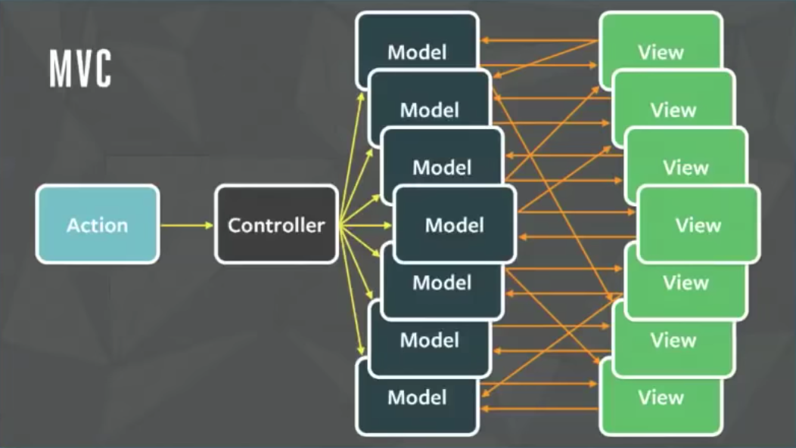
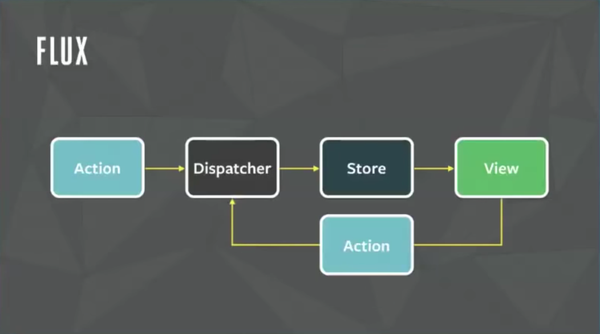
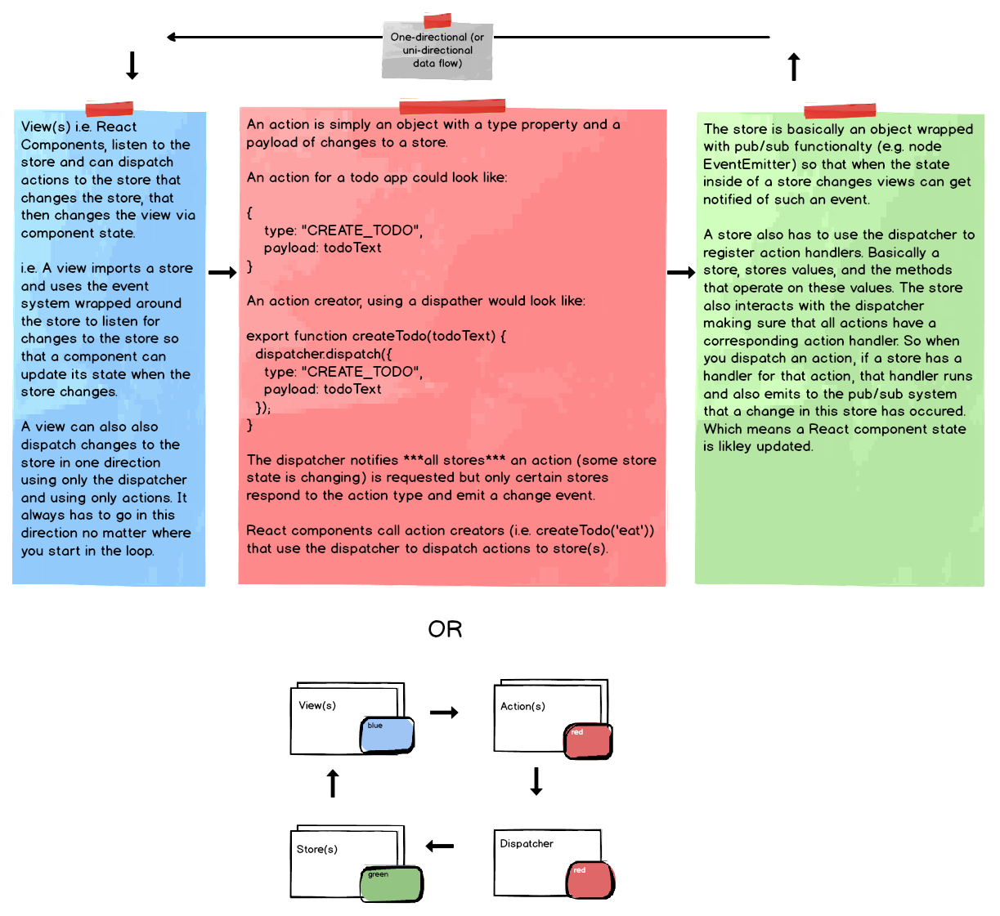

Where did flux come from and why?
Flux is the name given to a software design pattern used by Facebook to replace the MVC (model, view, controller) software design pattern they had previously used.
Facebook's implementation of the MVC pattern resulted in a tangled data flow and unpredictable results when dealing with UI state.
Facebook responded to this predicament is the Flux pattern which aimed to replace the tangled MVC relationships between a Model and View with a new pattern that enforced a "unidirectional data flow". This basically just means that state (within stores) flows in one direction through a set of processes passing through a single gateway (i.e. the dispatcher).
The flux pattern is made up of four parts and rests on a pub-sub foundation.
According to Facebook the flux pattern consists of:
dispatcher.js to be used in your
applications).
The only part you need from Flux to implement the Flux pattern is the dispatcher. The rest of it is just JavaScript boiler plate and an pub/sub event system.
I like to think that the fifth part to Flux is the event system that connects a view to the store and store to a view. The pub/sub system is used by the view to subscribe to a store(s) events and the store uses the event system to publish finished events to the view (e.g. a todo was added to the store notify all listeners the store changed). Flux does not offer a pub/sub. Any system can be used, but the EventEmitter system that comes with Node.js is recommended.
Study this high level diagram outlining the Flux pattern but don't focus too long on it yet (i.e. might only confuse you don't be afraid to move to the next section):
After studying the todos application in the next section return to this diagram and make sure the pattern being communicated is clearly understood.
This sections will build a todo applications using each part of the Flux pattern.
TodosApp.js
import React from "react";
import Todo from "../components/Todo";
import NewTodo from "../components/NewTodo";
import TodoStore from "../stores/todoStore";
export default class TodosApp extends React.Component {
state = {
todos: TodoStore.getAllTodos() // get current values from a store (i.e. the state)
};
componentDidMount() {
// use pub/sub system to connect store changes to this component
// only possible because store is inherits from EventEmitter
// (i.e. store is wrapped with pub/sub system)
TodoStore.on("change", this.getCurrentTodosThenSetState);
// when store emits change event, call getCurrentTodosThenSetState()
}
componentWillUnmount() {
// don't leave event handler around when component is gone
TodoStore.removeListener("change", this.getCurrentTodosThenSetState);
}
// when the store changes call this function
getCurrentTodosThenSetState = () => {
this.setState({ todos: TodoStore.getAllTodos() });
};
render() {
const { todos } = this.state;
return (
<div>
<h5>Todos:</h5>
<hr />
<ul>
{todos.length === 0
? "nada to do!"
: todos.map(todo => {
return <Todo key={todo.id} {...todo} />;
})}
</ul>
<hr />
<NewTodo />
</div>
);
}
}
NewTodo.js
import React, { Component } from "react";
import { createTodo } from "../actions/todoActions";
class NewTodo extends Component {
constructor() {
super();
this.state = {
value: ""
};
}
handleChange = event => {
const value = event.target.value;
this.setState({ value });
};
handleSubmit = event => {
const { value } = this.state;
event.preventDefault();
if (value.trim() !== "") createTodo(value);
this.setState({ value: "" });
};
render() {
const { value } = this.state;
return (
<form className="NewItem" onSubmit={this.handleSubmit}>
<input type="text" value={value} onChange={this.handleChange} />
<input type="submit" value="create todo" />
</form>
);
}
}
export default NewTodo;
Todo.js
import React from "react";
import { deleteTodo } from "../actions/todoActions";
export default class Todo extends React.Component {
handleDelete = () => {
deleteTodo(this.props.id);
};
render() {
const { text } = this.props;
return (
<li>
<span>{text}</span>
<span> - </span>
<button onClick={this.handleDelete}>Done</button>
</li>
);
}
}
dispatcher.js
import { Dispatcher } from "flux";
export default new Dispatcher;
todoActions.js
import dispatcher from "../dispatcher";
export function createTodo(todoText) {
dispatcher.dispatch({
type: "CREATE_TODO",
payload: todoText
});
}
export function deleteTodo(todoId) {
dispatcher.dispatch({
type: "DELETE_TODO",
payload: todoId
});
}
todoStore.js
import { EventEmitter } from "events";
import dispatcher from "../dispatcher";
class TodoStore extends EventEmitter {
constructor() {
super();
// state
this.todos = [{ id: Date.now(), text: "Eat Lunch" }];
// register handlers with dispatcher so calling .dispatch()
// will result in a store knowing which method to call based
// based on action type
dispatcher.register(action => {
switch (action.type) {
case "CREATE_TODO": {
this.createTodo(action.payload);
break;
}
case "DELETE_TODO": {
this.deleteTodo(action.payload);
break;
}
default:
}
});
}
// methods that operate on store, then emits change event to subscribers:
createTodo(todoText) {
const id = Date.now();
this.todos = [
...this.todos,
{
id,
text: todoText
}
];
this.emit("change");
}
deleteTodo(todoId) {
this.todos = this.todos.filter(todo => todo.id !== todoId);
this.emit("change");
}
// interface to get current state of the store
getAllTodos() {
return this.todos;
}
}
export default new TodoStore();
These external resources have been used in the creation of these notes.